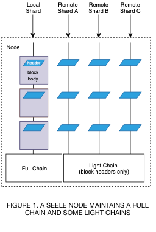
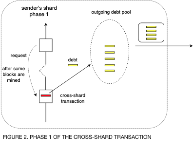
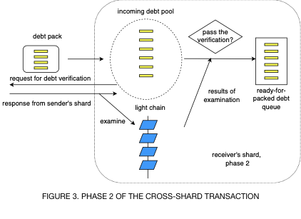

1. Introduction
One of the open questions in blockchain technologies is how to make a blockchain scalable so that it can support increasing numbers of both transactions and decentralized applications. There are many proposals for improving scalability such as lighting network[1], sharding[2,3], plasma[4]. A common idea they share is handling transactions in parallel. Sharding is the concept of dividing the network/computation/state into separate shards.
The challenge of sharding implementation is how to obtain information from other shards to verify the validity of cross-shard transactions. For example, if Darren in shard 1 sends some tokens to Max in shard 2, how could block validators in shard 2 know whether Darren has enough account balance? How to guarantee the safety of transactions? When it comes to smart contracts, the verification process is even more complicated because the validators need the state of smart contracts that is not easy to share in the network.
Seele mainnet with sharding implementation was launched on Mar 31, 2019. Besides sharding, it has a unique anti-ASIC MPOW consensus algorithm based on matrix computation. After running for a few months on the mainnet, the algorithm proves to be stable and decentralized. By far, considering the fact that there are not many nodes initially, Seele has 4 shards. Seele mainnet supports intra-shard transactions, cross-shard transactions and intra-shard smart contracts. Based on the statistics, in each shard, a block is generated every 14 seconds, which is close to the target block time: 10 seconds.
The basic idea of sharding in Seele mainnet is to partition the nodes and network into several shards. A transaction between two shards is called a cross-shard transaction. Because a cross-shard transaction involves accounts of two different shards, this transaction should be recorded in both shards. The transaction verification on the receiver’s side is a big challenge because validators in the receiver’s shard do not have the sender’s information at hand. They have to send requests to a remote peer to retrieve the desired information and carefully examine the responses. In Seele mainnet, we use light chains as archives of the other shards, with respect to the shard of the local node. The validity of the light chains is examined based on the POW solutions, which means it is impossible to forge a light chain without computation. If the responses from remote peers are consistent with the light chains, we have a high level of confidence that the cross-shard transaction has been confirmed on the sender’s side. But the maintenance of the light chains should not occupy too much resource such as CPU, storage and bandwidth. To this end, only the block headers are stored in the light chains. We will introduce more details in the next section.
2. Sharding
In this section, we will introduce how sharding works in Seele mainnet. At the setup stage, each node chooses a shard to join permanently. Nodes in the same shard share the full information including state, transaction history, etc., while nodes in different shard only share lightweight information such as block headers.

Typically, a node maintains a full chain associated with its shard and several light chains associated with other shards. See Figure 1 for an illustration. The full chain stores all the information of this shard while the light chains only store the block headers of other shards. While synchronizing a full chain, the local node downloads full blocks and verifies every transaction in the blocks. While synchronizing a light chain, only the block headers are downloaded and examined. The light chains serve as references for the full chain to verify cross-shard transactions.
Generally, the process of a cross-shard transaction can be divided into two phases. At Phase 1, the transaction is packed in a block by a miner in the sender’s shard and the fund is deducted from the sender’s account balance. After a certain amount of blocks are mined thereafter, we can say that the block with the cross-shard transaction is confirmed. Then miners create a debt and put it in the outgoing debt pool. The outgoing debt pool is a pool for the management of outgoing debts. Every once in a while, the outgoing debt pool checks the debts and sends them out to the nodes of other shards. Outgoing debt pool will remove the debts once it finds them get confirmed in the target shards.
At Phase 2, the debt reaches the receiver’s shard and gets into a incoming debt pool. The miners in the receiver’s shard send a request to the nodes of the sender’s shard for the verification of the debt. If the nodes of the sender’s shard confirm that the cross-shard transaction does exist, they send back the corresponding block header hash. Miners in the receiver’s shard then search for the returned block header hash in their local light chain. If the search is successful, then miners confirm that the debt is valid and move it into a packing queue. Finally, miners pack the debts in the block from the queue and add the fund to the receiver’s account balance.